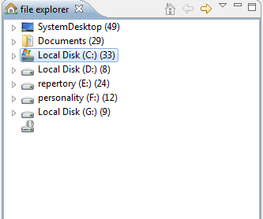
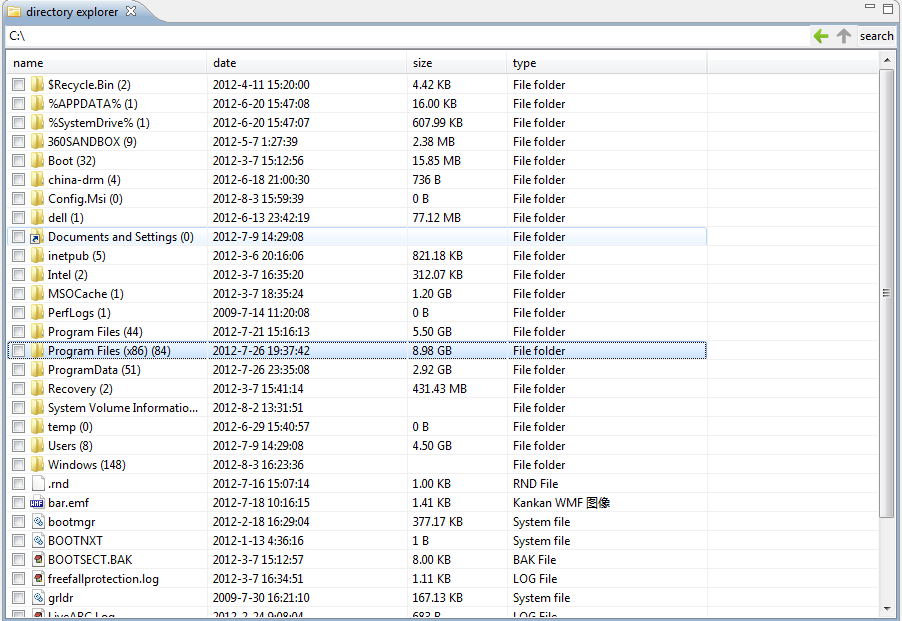
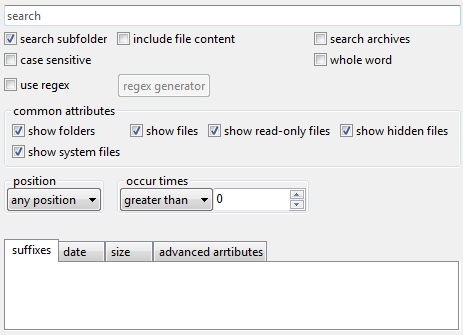

下面是文件管理工具1.1版本的新增的功能说明.
文件浏览器 |
|||||||||||
| 支持功能 |
文件浏览器是计算机上所有文件的导航. 显示系统关键文件夹和系统默认能够识别的磁盘(默认加载桌面/我的文档/所有本地磁盘). 如果要进一步了解或操作文件夹的内容,
可以双击对应的文件夹以进入文件夹浏览器.
 |
||||||||||
| 文件夹浏览器 | 文件夹浏览器用于浏览指定文件夹的内容, 文件夹地址显示在上方地址栏中,可以手动输入其它地址/双击文件夹/向上或后退按钮来进入其它文件夹. 文件夹浏览器支持自动统计文件夹大小.  | ||||||||||
| 文件搜索/文件过滤器 | 鼠标滑过文件夹浏览器右上角搜索框时便会出现文件搜索文件过滤器.  | ||||||||||
版本更新日志 |
|||||||||||
| 1.1 测试版(alpha) |
|
||||||||||